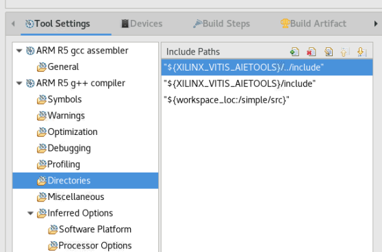
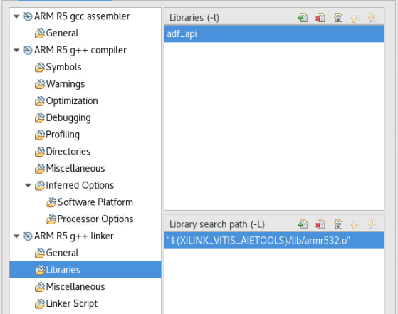

The previous tutorial is built based on using the A53 core. To migrate it to use the R5 core, follow the instructions on this page. The flow is the same but you need to make a few modifications.
The Vivado tools design needs to be modified to have the AI Engine domain mapped into the RPU address space. The Versal ACAP RPU is a 32-bit processor, but addressing the AI Engine requires at least 44 bits. This issue can be resolved using the address remap capability of the NoC NMU.
To do this, run the following commands in the Tcl console:
set_property CONFIG.REMAPS {{M00_AXI {{0x4000_0000 0x200_0000_0000 1G}}}} [get_bd_intf_pins /ps_noc/S01_AXI]
set_property range 1G [get_bd_addr_segs {versal_cips_0/DATA_RPU0/SEG_ps_noc_C0_DDR_LOW0}]
assign_bd_address -offset 0x40000000 -range 0x40000000 -target_address_space [get_bd_addr_spaces versal_cips_0/DATA_RPU0] [get_bd_addr_segs ai_engine_0/S00_AXI/AIE_ARRAY_0] -force
assign_bd_address
validate_bd_design
After the block design passes validation, regenerate the output and export the platform XSA file.
Because the XSA file has been changed, you need to rebuild the base platform first. To rebuild the base platform, right-click the base_pfm_vck190 project and select update hardware specifications. Choose the XSA file that you just exported in the previous step.
After the XSA file has been updated, click the hammer icon to rebuild the base platform project.
After the platform project building completes, rebuild the simple application system project. It is recommended to clean up the project first.
Because the simple application system project was rebuilt, the exported fixed platform XSA was changed. Therefore we need to follow the same process to update the AIE_A-to-Z_pfm_vck190 platform project. Right-click on it and select update hardware specifications.
After the XSA file has been updated, click the hammer icon to rebuild the fixed platform project.
The bare-metal application uses AI Engine driver APIs that are included in the BSP of the platform. To point the tool to those libraries, you need to make a few changes to the compiler/linker settings.
Right-click on the A72 PS application (A-to-Z_app) and click on c/c++ Build Settings.
a. In the directories section under ARM R5 g++ compiler, add the directory for the AI Engine application: ${XILINX_VITIS_AIETOOLS}/../include

b. In the libraries section under ARM R5 g++ compiler, add the following to the linker flags:
-ladf_api and -L"${XILINX_VITIS_AIETOOLS}/lib/armr532.o"

Rebuild the application project and run the system.
Licensed under the Apache License, Version 2.0 (the “License”); you may not use this file except in compliance with the License. You may obtain a copy of the License at
http://www.apache.org/licenses/LICENSE-2.0
Unless required by applicable law or agreed to in writing, software distributed under the License is distributed on an “AS IS” BASIS, WITHOUT WARRANTIES OR CONDITIONS OF ANY KIND, either express or implied. See the License for the specific language governing permissions and limitations under the License.
Copyright© 2020–2021 Xilinx
XD018